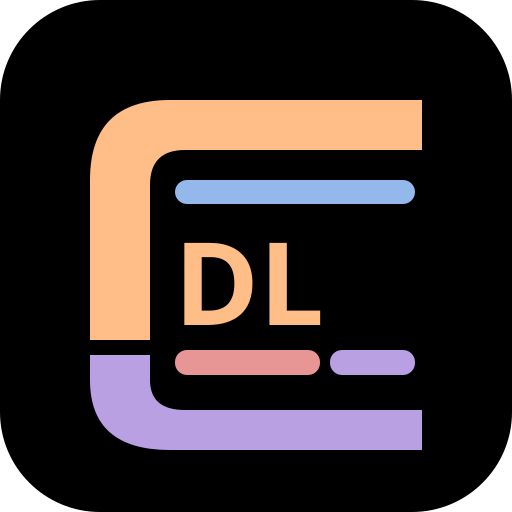

47-01
01 / LCARS
DL-00001
INSTRUCTION LOG
CORE 01
LOCAL DATA
AUDIO
USS VOYAGER //
INSTRUCTION RECORDS
47982.4
99-044
120.0
04/04
884-A
2377.9
00412.8
SYNC
64-BIT
Q-REF
74656
READY
01-VOY
VOYAGER
02-HAZ
ELITE FORCE
03-TAC
RED ALERT
04-LOG
DATA READY
LOG // 001
LOCAL READY
STARFLEET // INSTRUCTION DATABASE

DRUM
LOG
LCARS TEACHING CONSOLE // STUDENT RECORDS
DRUMTRACK STUDIOS
SYSTEM STANDBY // LOCAL DATABASE & AUDIO READY
01
INITIALIZE DRUM LOG
ENGAGE // 47
DRUM LOG 1.11.0 // OFFLINE PWA // DRUMTRACK STUDIOS
01-A
LESSON JOURNAL
STUDENT DIRECTORY
SCHEDULE
04 // DATA SYSTEMS
DL—01
LCARS / INSTRUCTION RECORDS
DRUM LOG
LCARS 01
ACTIVE STUDENTS
00
LESSON RECORDS
00
DATABASE
LOCAL
LOCAL / PRIVATE